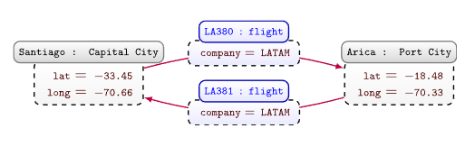
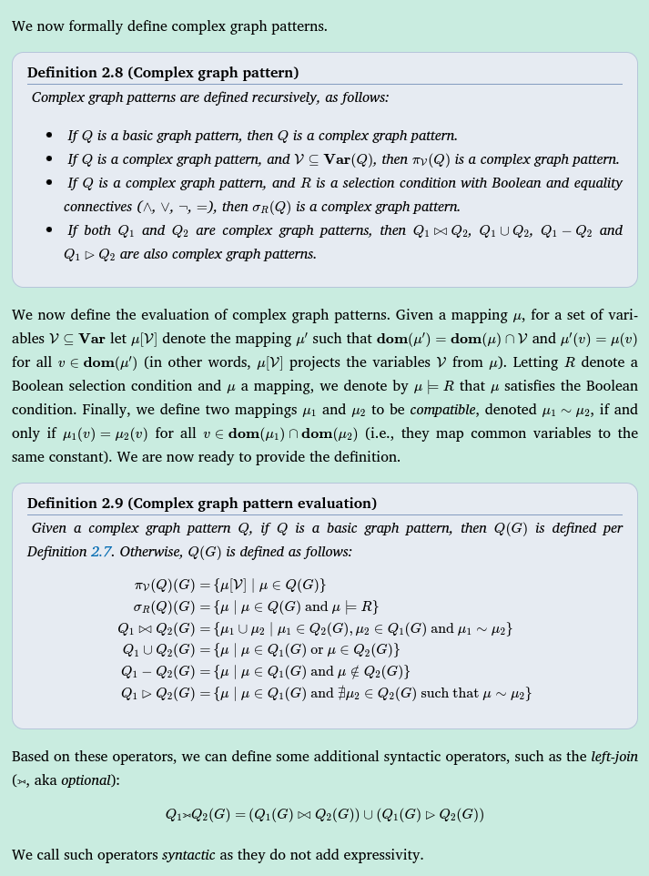

Knowledge graphs book (Hogen et al)
Types of graphs (models)
- Directed edge-labelled graphs: A directed edge-labelled graph (also known as a multi-relational graph) is defined as a set of nodes and a set of directed labelled edges between those nodes. In the case of knowledge graphs, nodes are used to represent entities and edges are used to represent (binary) relations between those entities
Definition
Let \(\textbf{Con}\) be a countably infinite set of constants. A directed edge-labelled graph is a tuple \(G=(V,E,L)\), where \(V\subseteq\textbf{Con}\) is a set of nodes, \(L\subseteq\textbf{Con}\), and \(E\subseteq V\times L\times V\) is a set of edges.
- Heterogeneous graphs: A heterogeneous graph (or heterogeneous information network) is a graph where each node and edge is assigned one type.
Definition
A heterogeneous graph is a tuple \(G=(V,E,L,l)\), where \(V\subseteq\textbf{Con}\) is a set of nodes, \(L\subseteq\textbf{Con}\) is a set of edge/node labels, \(E\subseteq V\times L\times V\) is a set of edges, and \(l:V\mapsto L\) maps each node to a label.
- Property graphs: A property graph allows a set of property–value pairs and a label to be associated with both nodes and edges.

Definition
A property graph is a tuple \(G=(V,E,L,P,U,e,l,p)\), where \(V\subseteq\textbf{Con}\) is a set of node ids, \(E\subseteq\textbf{Con}\) is a set of edge ids, \(L\subseteq\textbf{Con}\) is a set of labels, \(P\subseteq\textbf{Con}\) is a set of properties, \(U\subseteq\textbf{Con}\) is a set of values, \(e:E\mapsto V\times V\) maps an edge id to a pair of node ids, \(l:V\cup E\mapsto 2^L\) maps an edge or a node id to a set of labels, and \(p:V\cup E\mapsto 2^{P\times U}\) maps an edge or a node id to a set of property-value pairs.
Graph patterns
Definition
We define variables \(\textbf{Var}\) ranging over (but disjoint from \(\textbf{Con}\cap\textbf{Var}=\varnothing\)) the set of constants. We define terms as \(\textbf{Term} = \textbf{Con}\cup\textbf{Var}\). Then, a basic directed edge-labelled graph pattern is a tuple \(Q=(V,E,L)\), where \(V\subseteq\textbf{Term}\) is a set of node terms, \(L\subseteq\textbf{Term}\) is a set of edge terms, and \(E\subseteq V\times L\times V\) is a set of edges.
To evaluate a graph pattern we need to, first, define a mapping \(\mu:\textbf{Var}\mapsto\textbf{Con}\) from variables to constants, whose domain is denoted by \(dom(\mu)\). Let \(\textbf{Var}(Q)\) denote all the variables appearing in \(Q\).
Definition
Let \(Q\) be a basic graph pattern and \(G\) be a data graph, in the same model. Then, we define the evaluation of the basic graph pattern \(Q\) over data graph \(G\), denoted \(Q(G)\), to be the set of mappings \(Q(G)=\{\mu|\mu(Q)\subseteq G \text{ and } dom(\mu)=\textbf{Var}(Q)\}\)
- Unary operators include projection:
- (𝜋) to output a subset of columns
- (𝜎) selection to output a subset of rows matching a given condition
- (𝜌) renaming of columns
- Binary operators include:
- union (∪) to merge the rows of two tables into one table
- difference (−) to remove the rows from the first table present in the second table
- and joins (Z) to extend the rows of one table with rows from the other table that satisfy a join condition.
- Selection and join conditions typically include:
- equalities (=)
- inequalities (≤)
- negation (¬)
- disjunction (∨)
- etc…
- From these operators, we can further define other (syntactic) operators:
- intersection (∩) outputs rows in both tables
- anti-join (▷, aka not exists) outputs rows from the first table for which there are no join-compatible rows in the second table
- left-join (⟕, aka optional) performs a join but keeping rows from the first table without a compatible row in the second table

Schema
- Semantic schema:
- Defines the meaning of high level terms (aka vocabulary or terminology), facilitating reasoning over graphs.
- Groupings of nodes into Classes.
- Semantic edge labels are also called properties. Edge labels can also form hierarchies of properties and sub-properties.
- A domain of properties indicates the class(es) of entities for nodes from which edges with these properties extend.
- A range of properties indicates the classes of entities for nodes to which edges with these properties extend.
Identification
Persistent identifiers (PIDs) uniquely identify an entity. Prominent examples of PID schemes include Digital Object Identifiers (DOIs) for papers, ORCID IDs for authors, International Standard Book Numbers (ISBNs) for books, Alpha-2 codes for counties.
Rather than adopt the Uniform Resource Locators (URLs) used to identify the location of information resources such as webpages, RDF 1.1 proposes to use Internationalised Resource Identifiers (IRIs) to identify non-information resources. For example, in the RDF representation of the Wikidata while the URL https://www.wikidata.org/wiki/Q2887 refers to a webpage that can be loaded in a browser providing human-readable meta-data about Santiago, the IRI http://www.wikidata.org/entity/Q2887 refers to the city itself. Distinguishing the identifiers for both resources (the webpage and the city itself) avoids naming clashes.
External identity links. Problem when different sources refer to the same entity. Mitigate by:
- Associate with uniquely-identifying information in the graph
- Use identity links stating that local entities are the same as external ones (owl:sameAs)
Datatypes are values such as dates, numbers etc that does not make sense to assign an IRI. RDF utilizes XML Schema Datatypes (XSD) where a datatype node is given a pair (l,d), where l is a lexical string and d is an IRI denoting the datatype, e.g. xsd:dateTime. :Important: Datatype nodes in RDF are not allowed to have outgoing edges.
Lexicalization: Often, node identifiers are not designed to be human-interpretable. It is common to add edges that provide human-interpretable labels for nodes, e.g. [wd:Q2887] –(rdfs:label)–> [“Santiago”].
Existential nodes: In the case of incomplete information –> define empty nodes. Authors call for minimized usage of existential nodes.
Ontologies
Definition: An ontology is a concrete, formal representation of what terms mean within the scope they are used. It leads to consistent use of terms and consistent modeling in a KG. If an ontology is adopted by multiple KGs, it leads to increased interoperability among them. One of the most popular ontology languages is the Web Ontology Language (OWL), recommended by W3C and compatible with RDF graphs.
Interpretation: Abstractly, interpretation can be thought of comprising of two elements: a domain graph and a mapping from the terms (nodes and edges) of the data graph to those of the domain graph,